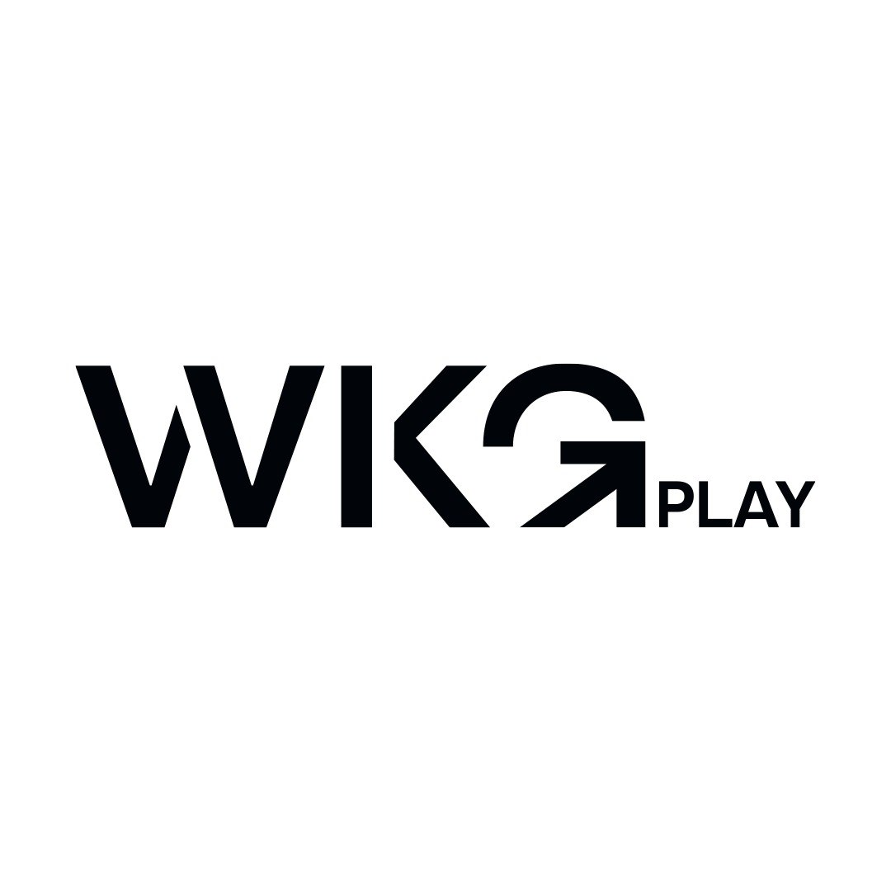

NOVOS SENTIDOS PARA SEU NEGÓCIO
Uma rádio que toca sua marca.
Música, chamadas, anúncios e muito mais. Tudo em uma experiência de áudio com a identidade da sua empresa.
WKG
00:4402:38

NOVOS SENTIDOS PARA SEU NEGÓCIO
Música, chamadas, anúncios e muito mais. Tudo em uma experiência de áudio com a identidade da sua empresa.
Prévia visual. Na publicação final, o player exibirá automaticamente capa, faixa e transmissão ao vivo de cada rádio.